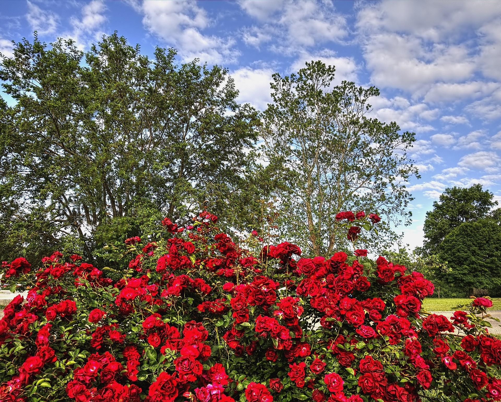
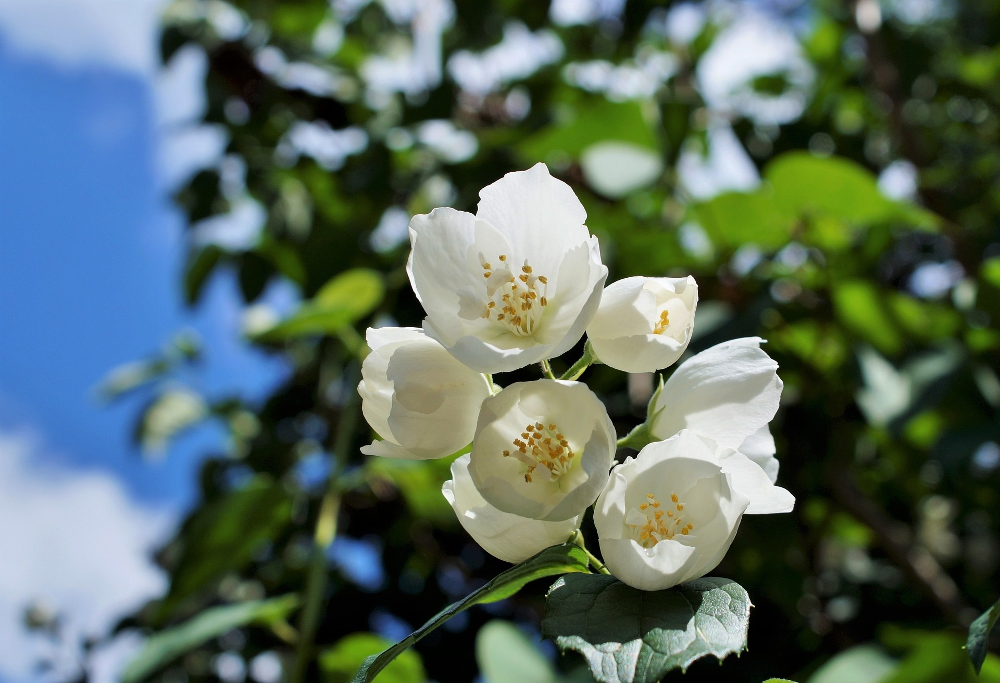
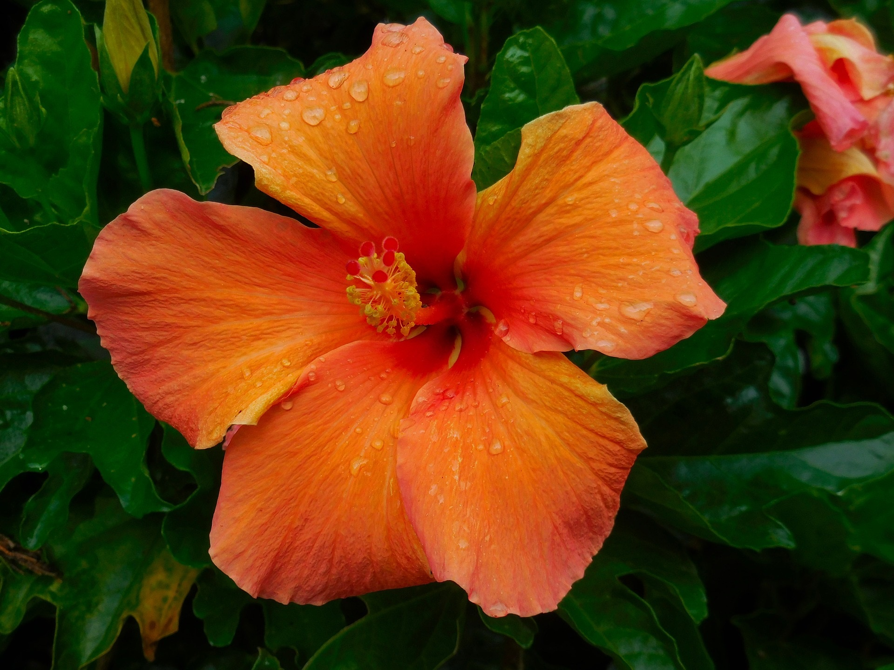
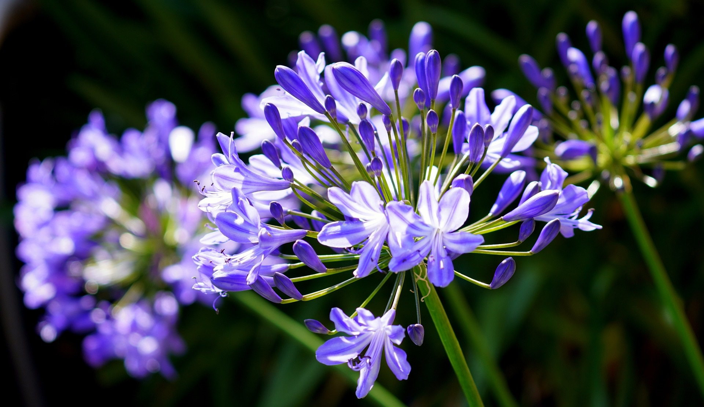
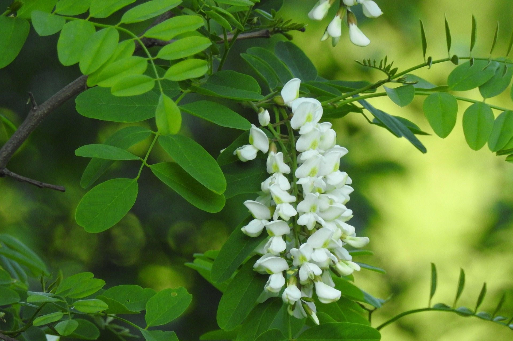

Climate: Moderately cool climate with bright sunshine and free ventilation
is very good for rose cultivation in India. Most rose cultivars grow best at a temperature
range of 15-270C producing good quality and quantity of flowers.,
2. Soil and its Preparation: The ideal soil for rose flowers should be medium loam having
sufficient organic matter, proper drainage and pH of 6.0 to 7.0. The soil should be
thoroughly dug or ploughed 20-30 cm deep and kept open to sun for at least 15 days.

1.Climate:Aw well distributed rainfall annual rainfall of 800 to 1000mm is
sufficient for growth and development.For successful cultivation mild winter,mild
summer,moderate rainfall and sunny days are ideal.
2.Soil and preparation:The soil which
is well drained and rich loamy with a PH level ranging from 6.5 to 7.5 is ideal for
cultivation of jasimine .

1.Climate:Tropical and subtropical conditions.Propagation is by softwood
or semi-hardwood cuttings. Hard or semi hard woodcuttings of 60 cm length are used for
planting. Rooted cuttings can also be planted in the normal manner during June to July in
30cm Hibiscus prefers abundant watering and fertilization when newly planted, but requires
little care once established.
2.Soil Preparation:
Although usually strong and easy to grow, Hibiscus is attacked by aphids and mealy bugs
which accumulate at the tips of stems, causing new growth to be misshapen. Aphids may cover
the leaves with sticky honeydew.

1.Climate: Water lilies need at least four hours of bright sunlight daily.
Find a sunny spot in your pond or position an aquatic container in a bright location in your
garden before planting water lilies.
2.Fertilisers: Slow release fertilizer is the best to use as it release slowly into the soil
to feed the water lily whereas if you where to use something that dissolves quickly such as
blood and bone or cow manure, while the water lily might respond well initially, it will
taint the water.

1.1Climate: They are hardy and are tolerant of drought and poor soil. They
are ideal plants for borders, beside fences and along driveways. Dwarf forms are superb in
rockeries or containers.Cool to mild tropicalDwarf Varieties .
2.Soil Preparation:
Tall Varieties Height: 1.5m, Width: 50cm
While they tolerate poor soil, Agapanthus do prefer well-drained soil prepared with plenty
of organic matter. Work in compost or well broken down manure before planting. With heavy
soils, mix in grit when planting. This will open up small air pockets and improve drainage.

1.Climate:Acacia flourishes in a temperature range of 12-25 degrees
centigrade. The tree may grow up to 2,500 m above sea level. The mean annual rainfall
required by the species is 9002,600 mm. It prefers deep, medium to well drained, moderately
fertile soils.requires a temperature range of 22-29 degrees centigrade.
2.Soil Preparation: It grows up to 1,500 m but performs best below 800 m. The best growth
has been recorded in areas with annual rainfall of 4,500 mm and no prolonged dry season.
Deep, well drained soils with high fertility provide the
best medium for strong, healthy growth.